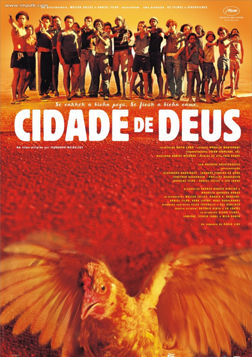

ANTOINE MOREAU
VC - CODE - SOME OTHER STUFF
I am a VC at Nadra Ventures, an early-stage venture capital fund investing in the most promising FinTech and AgTech startups in Africa. I am also an apprentice coder, learning web development (HTML, CSS, JS, Ruby on Rails, SQL). I am currently based in São Paulo, Brazil.
Get in touch!
My favorite movies
|  | Cidade de Deus - Two boys growing up in a violent neighborhood of Rio de Janeiro take different paths: one becomes a photographer, the other a drug dealer. |
 |
The Life Aquatic with Steve Zissou- With a plan to exact revenge on a mythical shark that killed his partner, oceanographer Steve Zissou rallies a crew that includes his estranged wife, a journalist, and a man who may or may not be his son. |
| La Cité de la Peur - A second-class horror movie has to be shown at Cannes Film Festival, but, before each screening, the projectionist is killed by a mysterious fellow, with hammer and sickle, just as it happens in the film to be shown. |
Twitter
LinkedIn
GitHub
YouTube
Flickr